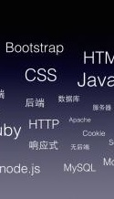

css
csssssssssccssc
超级文本标记语言是标准通用标记语言下的一个应用，也是一种规范，一种标准，它通过标记符号来标记要显示的网页中的各个部分。网页文件本身是一种文本文件，通过在文本文件中添加标记符，可以告诉浏览器如何显示其中的内容（如：文字如何处理，画面如何安排，图片如何显示等）,可以告诉浏览器如何显示其中的内容（如：文字如何处理，画面如何安排，图片如何显示等。
层叠样式表(英文全称：Cascading Style Sheets)是一种用来表现HTML（标准通用标记语言的一个应用）或XML（标准通用标记语言的一个子集）等文件样式的计算机语言。CSS不仅可以静态地修饰网页，还可以配合各种脚本语言动态地对网页各元素进行格式化,CSS不仅可以静态地修饰网页，还可以配合各种脚本语言动态地对网页各元素进行格式化。
JavaScript一种直译式脚本语言，是一种动态类型、弱类型、基于原型的语言，内置支持类型。它的解释器被称为JavaScript引擎，为浏览器的一部分，广泛用于客户端的脚本语言。
HTML--------40%
CSS ---------40%
Javascript---30%
前端精品博客推荐
(1)可能每一篇我都会以Home - 廖雪峰的官方网站作为开头，因为是这个博客一直指引着我得学**。再次感谢这样的大牛作者，此博客十分适合初学者学**使用，不管是Javascript还是Python都有相应的超级详细基础的学**教程。作者介绍： 这个不用介绍，看博客就好。博客主要内容包括：端前端前端前端前端前端前端前端前端前端前端前端前端前端前端前端前端前端前端前端前端前端前教程,软件,编程,开发, 运维,云计算,网络,互联网。
一句话简述：研究互联网产品和技术，提供原创中文精品教程。
(2)囧克斯 作者介绍：囧克斯，本名 赵锦江;英文名 Jinks Zhao;
昵称 勾三股四。酷爱编程喜欢足球、音乐，目前就职于淘宝。
Weibo:勾三股四的微博端前端前端前端前端前端前端前端前端前端前端前端前端前端前端前端前端前端前端前端前端前端前博客主要内容包括：前端各种内容
(3)聂微东 - 博客园
作者介绍：毕业于陆军航空兵学院，获计算机科学与技术学士学位。热爱编程，从事JavaScript研发工作，关注并喜欢研究等技术。业余爱好是看些杂七杂八的书；喜欢了解汽车相关的知识。博客主要内容包括：HTML5，Python，PHP，Nodejs，MySQL，NoSQL.前端前端前端前端前端前端前端前端前端前端前端前端前端前端前端前端前端前端前端前端前端前端前端前端前端前端前端前端前端前端前端前端前端前端前端前端前端前端前端前端前端前端前端前端前端前前端前端前端前端前端前。前端前端前端前端前端前端前端前端前端前端前端前端前端前端前端前端前端前端前端前端前端前端前端前端前端前端前端前端前端前端前端前端前端前端前端前端前端。
前端技术前端技术前端技术
0
ONE TWO
THREE FOUR FIVE
hello world hello world
hello world